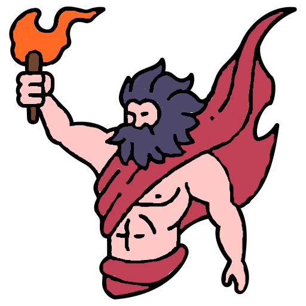

Прометей — один із найвидатніших титанів у давньогрецькій міфології, символ розуму, прогресу й жертовності заради людства. Його ім’я означає "той, хто передбачає", і в міфах він виступає як благодійник людей, який навчив їх ремеслам, наукам і подарував їм вогонь, ставши уособленням боротьби за свободу і знання.
Згідно з міфами, Прометей створив людей із глини й надав їм життя. Однак люди залишалися слабкими та безпорадними. Щоб допомогти їм, Прометей викрав божественний вогонь з Олімпу, сховавши його у тростині, і приніс на землю. Завдяки цьому люди отримали тепло, світло й здатність до прогресу.
Зевс розгнівався через непослух Прометея та його любов до людства. У покарання він наказав прикувати титана до скелі на Кавказі. Щодня орел, посланий Зевсом, прилітав, щоб клювати його печінку, яка щоночі відновлювалася. Це мука тривала століттями, доки герой Геракл не звільнив Прометея, вбивши орла.
Прометей став уособленням людської боротьби за знання та прогрес навіть у протистоянні з владою. Його жертва нагадує про відповідальність і страждання, які супроводжують великі відкриття. У філософії та мистецтві Прометей символізує прагнення до свободи, гуманізму та непокори.
Прометея рідко шанували як бога, але його образ глибоко вкорінився в літературі й культурі. У мистецтві його часто зображували прикутою до скелі фігурою з орлом, що терзає його тіло, або з факелом у руках, як символом дарованого вогню.
